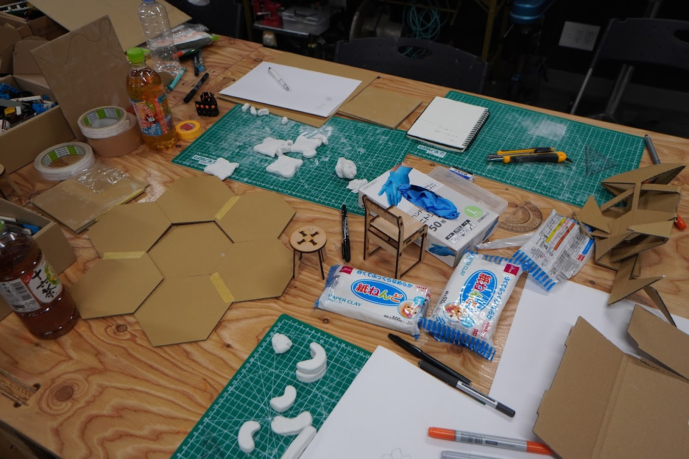
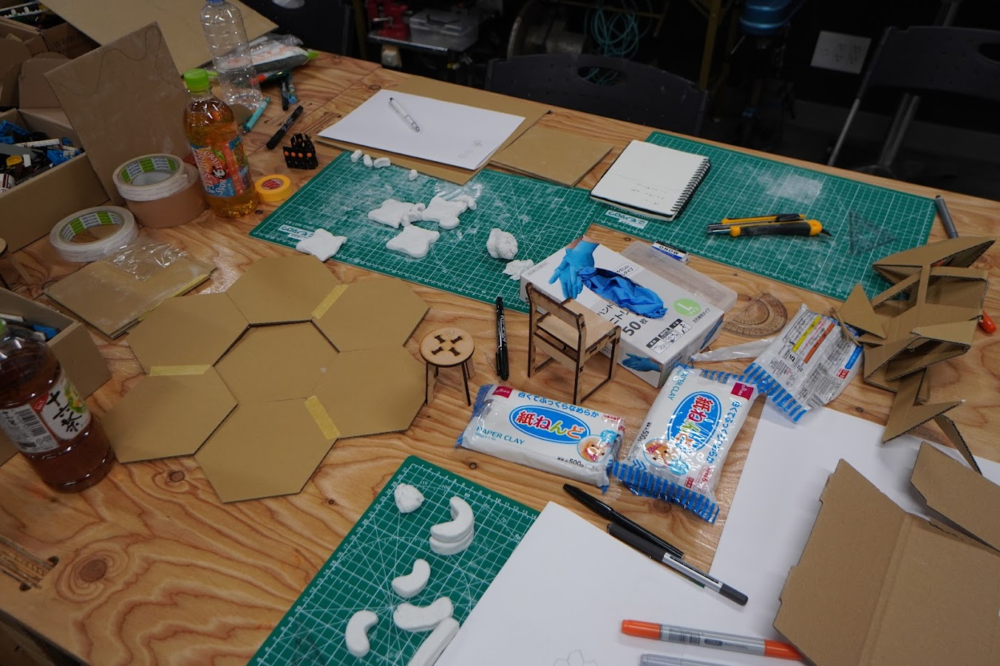

FABLAB KURIYAMA｜まちの課題をものづくりで解決する
2泊3日のサマーチャレンジin栗山町
2日目｜アイディアづくり、プロトタイピング
7月8日（土）
8：30～ 9：30 朝食
9：30～10：00 準備・移動
10：00～12：30 午前ワーク（アイディアづくり）
12：30～13：30 昼食
13：30～17：00 午後ワーク（プロとタイピング）
17：30～18：00 中間報告
18：00～19：00 夕食（各自）
19：00～21：00 夜ワーク
21：00 解散
午前ワーク（アイディアづくり）


2回に渡りアイディアススケッチを行いアイディアを組み合わせたり新しく思いついたイメージなどをスケッチすることで相手に伝わりやすくする。話し合いを行いを重ねながらより具体的なものを考えていく。
課題を解決させるものを決定！！
決定したアイディア：ベビースペースをつくる
午後ワーク（プロとタイピング）
 

＜プロトタイピング＞
1回目：紙粘土
4パーツ位を組み合わせたベビーマットづくりで可愛らしくなみなみのデザインを意識したマットをイメージ
課題→パズルのように組み合わせることが不可能でコンパクトにならなかった。できればたためるようなマットにしたい。
2回目：段ボール
折りたためる図形を意識した。正六角形の形だと組み合わせやすくなるのでは…と
正六角形の特徴→全ての辺の長さと角度が同じことから、コンパクトな折りたたみのマットができるのではないかという話になった。
そこから、正六角形の形で折りたたみ式のマットの大きさや素材などを検討するために情報収集を行った。
＊具体的に行ったこと＊
・実際に使用する時にどこに置くのか
・スペ－スにおいてのサイズ感はどのくらいなのかをメジャーを使用し測る
・六角形の椅子を参考に形を決定
・どのような素材が必要なのかを調べる
（柔らかくて、危なくないようにする）
決まった素材→タイルマット（絨毯のような）、ウレタンシート×7、蝶つがい×12、板厚9mm弱の合板？、ビス5～6mm、圧着剤（協力圧着テープ）
夜ワーク


使用した機材→大型CNC切消機、レーザー加工機、木工ハンディーツール
＜大型CNC切消機＞
椅子のサイズト同じ大きさのため参考にして位置を確認
↓
板を固定させる固定させる為に4つ角をビスで固定
↓
起動させるために設定を行う
＜レーザー加工機＞
・どのくらいの強度で使用できるのかを確認。
・タイルマットのカットに使用。
＜木工ハンディーツール＞
大型CNC切消機でカットしたものを形を整える。
↓
あらい部分を削る（ヤスリもしようして）
＿＿＿＿＿＿＿＿＿＿＿＿＿＿＿＿＿＿＿＿＿＿＿＿＿＿＿＿＿＿＿＿＿＿＿＿＿＿＿＿＿＿＿＿＿＿＿＿＿＿＿＿＿＿＿＿＿＿＿＿＿＿＿＿＿＿＿＿＿＿
🔧最終作業🔧
サイズに合わせてウレタンシートをカット→圧着テープ、ボンドではりつける→蝶つがいをビスで固定
1回目：2ピースをあわせたところズレで浮いてしまった。
▽▽改善方法▽▽
2mmの隙間を空けることで蝶つがい分のズレを修復することに
苦労したところ😖
・2mmの隙間がずれないように皆で抑えながらビスで固定したところ。
・曲がったり、なめてしまい、なかなかビスが上手く入らなかった。
・段ボールで作製したプロトタイプを参考にしてどこに蝶つがいを設置するべきか検討したところ。
夜遅くまで製作してくださった、Fablab kuriyamaの方々に感謝したい。
全員が協力して作業を行えたことで完成のめどがたちました。
✏学んだこと
役割分担や機械をある程度触れるようにしていた方がスムーズである。
何か作業を行う上で、効率的に時間を使えるようにすることが重要である。
各機械の活用できることの知識を増やして、スムーズに作業に繋げることが必要であることを学んだ。